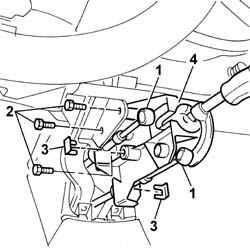

2125C16 gear hand-lever - r r
- Path
- Procedures > 21 GEARBOX UNIT > 2125 MANUAL GEARBOX EXTERNAL CONTROLS > 2125C manual gearbox external control (cables) > 2125C16 gear hand-lever - r r
- Kind
- repair procedure (removal / refitting; the operation number is the code)
- Applies to
- all engines; all production periods
- Interactive page
- https://sloeber94.github.io/elrnDB-fDbl/en/#/2584596
Applies to: all engines; all production periods
 Removing
Removing
 Refitting
RefittingWorking from inside the vehicle, proceed as described below.
Op. 7040A60 UNDERDASHBOARD TRIM - R.R.
1. Remove the gear selector and engagement flexible cable ends from the gear lever.
2. Undo the bolts (2a) fixing the gear lever support (2b) to the dashboard support.
3. Lower the gear lever support and detach the flexible cable fixing springs.
4. Remove the flexible cables and remove the support complete with gear lever.

Applies to: all engines; all production periods
Refitting
RemovingPosition the two gear selector and engagement flexible cables on the support complete with handbrake lever.
Secure the two flexible cables to it using the springs and press fit the two ends on the support.
Tighten the bolts fixing the gear lever support to the bodyshell to torque.
 | Fastening | Component | Ø | Value (daNm) |
|---|---|---|---|---|
- | Bolt | GEAR LEVER MOUNT | M8 | 2.5 |